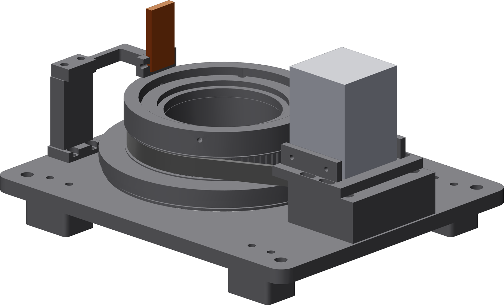

What you are building
A turntable that stands the carbonator tube vertically and rotates it, slowly and evenly, while you hold the welding head still and close an end cap.

It does four things
- Holds the tube on its own axis to under 0.25 mm of runout.
- Turns it at a bead speed you choose between 5 and 15 mm/s.
- Stops the instant your foot leaves the pedal.
- Keeps the welder's work lead on stationary copper, so no cable winds up.
It does not
- Carry the welding head. You hold that.
- Command the laser. The pedal is rotation only.
- Replace any guarding, eye protection, extraction, or argon control.
One number to keep
3,200 pulses per motor revolution through a 4.5:1 belt is 14,400 pulses per table revolution. A default weld lap is 380° — exactly 15,200 pulses — and that count, not a stopwatch, is what ends the move.